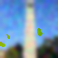
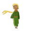

The HuggingFace inference pipeline can be generalized as a sequence of clearly defined
transformations. The process starts with raw text, a plain string such as “This course is
amazing.” The tokenizer takes this string, splits it into subword units, and looks
up each unit in a fixed vocabulary table. This step produces a sequence of integers called
input IDs, which is the form the model can consume. The model then takes
these input IDs and computes a real-valued score for each possible label; these scores are called
logits and encode how compatible the text is with each class before any normalization.
The final post-processing block converts logits into something usable: a softmax
turns them into probabilities, and simple decision logic (such as taking the largest probability)
chooses the predicted label, for example POSITIVE versus NEGATIVE sentiment.
Transformer Architecture & DeepFloyd IF
The internal structure of the model can be decomposed into an embedding layer, a stack of
transformer layers, and a classification head. First, an embedding layer maps each
input ID to a dense vector that represents the token in a continuous space. A stack of
transformer layers then processes the entire sequence: each layer applies
self-attention, so every token can use information from every other token, followed by small
feed-forward networks that refine these combined representations. After several such layers, the
model extracts a single summary vector for the whole sequence (for example, by reading a special
classification token or averaging all token vectors). A small classification head,
typically one or two linear layers, takes this summary vector and produces the logits. These logits
feed directly into the post-processing step from the first paragraph, completing the logical chain
from raw text to final prediction.
DeepFloyd IF can be understood as coupling this text encoder to a three-stage cascaded diffusion
model: a 64×64 base denoiser (stage 1) followed by two upsamplers that refine the image to higher
resolutions (stages 2 and 3). For all experiments in this section, prompt embeddings produced by
the transformer are used as conditioning signals at every denoising step, while the random seed is
fixed to 12152000 so that differences in the outputs primarily reflect the prompts and sampling
hyperparameters. Classifier-free guidance is applied with a relatively strong guidance scale in
stage 1 (γ ≈ 9.0) and slightly lower guidance in the upsampling stages (γ ≈ 7.0), which stabilizes
global structure while allowing the higher-resolution stages to sharpen details. This setup
provides a controlled environment for the prompt-based images that follow, making it possible to
interpret how changes in text descriptions translate into systematic changes in composition,
lighting, and reflective structure.
DeepFloyd Prompts
Prompt design in this part is instantiated by a small, curated set of historical and
reflection-based descriptions. Six prompts are used in total, including: a symbolist scene of
Lewis and Clark reaching the Columbia River, a crowded baroque marketplace lit by torches, a
mermaid under moonlight described through reflections, a Renaissance city square seen through
glass panes, a library whose windows open onto different skies, and a symbolic close-up of an
eye reflecting the Hiroshima mushroom cloud. For each prompt, a text embedding is obtained using
the HuggingFace text encoder and reused across all subsequent sampling runs.
DeepFloyd Prompts
Timesteps
"a symbolist painting of Lewis and Clark reaching the Columbia
River, soft edges""a baroque oil painting of a crowded market lit by torches and
deep shadows"
"a romanticism oil painting of a mermaid seen only as a
reflection
in dark waves under moonlight"
" “a renaissance-style painting of a city square reflected in
many
small glass panes”
"a symbolist oil painting, close-up of a human eye whose iris is
a
reflection of a distant mushroom of the atomic bomb dropped at Hiroshima"
"a realism painting of a library where each window opens onto a
different sky"
Three of these prompts are selected as primary case studies and are rendered repeatedly with a
fixed random seed of 12152000 and multiple stage-1 num_inference_steps configurations, while
keeping the higher-resolution stages and guidance scales fixed. This setup satisfies the
deliverable requirements: it produces concrete images for the chosen captions, exposes how
changes in the diffusion depth alter the realization of each description, and establishes a
single seed that is carried forward into later parts of the project so that differences in the
outputs can be attributed to the prompts and sampling settings rather than to randomness.
1.1 Forward Process
Deliverables
Implement the noisy_im = forward(im, t) function
Show the Campanile at noise level [250, 500, 750].
Adding Noise
Timesteps
t = 0t = 250t = 500t = 750
1.2 Classical Denoising
REQUIRED:
For the 3 text prompts that we provide, display the caption and the output of the model. Reflect on the quality of
the outputs and their relationships to the text prompts. Make sure to try at least 2 different num_inference_steps
values. Report the random seed that you're using here. You should use the same seed all subsequent parts.
Classical Denoising (Noisy vs Gaussian)
Noisy input
t = 0t = 250t = 500t = 750
Gaussian denoised
t = 0

t = 250t = 500t = 750
1.3 One-Step Denoising
For the 3 noisy images from 1.2 (t = [250, 500, 750]):
Use your forward function to add noise to your Campanile.
Estimate the noise in the new noisy image, by passing it through stage_1.unet
Remove the noise from the noisy image to obtain an estimate of the original image.
Visualize the original image, the noisy image, and the estimate of the original image
One-Step Denoising (Noisy vs Estimation)
One-Step Denoised
t = 0t = 250t = 500t = 750
Noisy input
t = 0t = 250t = 500t = 750
IV. Iterative Denoising
Using i_start = 10:
Create strided_timesteps: a list of monotonically decreasing timesteps, starting at 990, with a stride of 30,
eventually reaching 0. Also initialize the timesteps using the function
stage_1.scheduler.set_timesteps(timesteps=strided_timesteps)
Complete the iterative_denoise function
Show the noisy Campanile every 5th loop of denoising (it should gradually become less noisy)
Show the final predicted clean image, using iterative denoising
Show the predicted clean image using only a single denoising step, as was done in the previous part. This should
look much worse.
Show the predicted clean image using gaussian blurring, as was done in part 1.2.
Deliverables
Implement the iterative_denoise_cfg function
Show 5 images of "a high quality photo" with a CFG scale of
. Now this prompt becomes a condition (but fairly weak) to generate conditional noise! You will use your
customized prompts as stronger conditions in part 1.7 - part 1.9.
1.6 Sample with CFG
Sample 1Sample 2Sample 3Sample 4Sample 5
VII. Image-to-image Translation
Deliverables
Edits of the Campanile image, using the given prompt at noise levels [1, 3, 5, 7, 10, 20] with the conditional
text prompt "a high quality photo"
Edits of 2 of your own test images, using the same procedure.
Hints
You should have a range of images, gradually looking more like the original image
1.7 Predicting Campanile with SDEdit Algorithm
Sampled images
start index = 1start index = 2start index = 3start index = 7start index = 10start index = 20Original input
Sampling using SDEdit algorithm
Glass Art
starting index = 1starting index = 3starting index = 5starting index = 7starting index = 10starting index = 20Original
Space Needle
starting index = 1starting index = 3starting index = 5starting index = 7starting index = 10starting index = 20Original
1.7.1 Editing Web Images
1 image from the web of your choice, edited using the above method for noise levels [1, 3, 5, 7, 10, 20] (and
whatever additional noise levels you want)
2 hand drawn images, edited using the above method for noise levels [1, 3, 5, 7, 10, 20] (and whatever additional
noise levels you want)
Web based image: The Crab Nebula
Sampled images
start index = 1start index = 3start index = 5start index = 7start index = 10start index = 20Rescaled Input Image (64x64)
1.7.1 Editing Hand Drawn Images
1 image from the web of your choice, edited using the above method for noise levels [1, 3, 5, 7, 10, 20] (and
whatever additional noise levels you want)
2 hand drawn images, edited using the above method for noise levels [1, 3, 5, 7, 10, 20] (and whatever additional
noise levels you want)
Various Denoising Methods
Doodle 1: The Blue Bandit
Rescaled Input Image (64x64) start index = 1start index = 3start index = 5start index = 7start index = 10start index = 20
Doodle 2: The Little Prince

Rescaled Input Image (64x64) start index = 1start index = 3start index = 5start index = 7start index = 10start index = 20
1.7.2 Inpainting
1 image from the web of your choice, edited using the above method for noise levels [1, 3, 5, 7, 10, 20] (and
whatever additional noise levels you want)
2 hand drawn images, edited using the above method for noise levels [1, 3, 5, 7, 10, 20] (and whatever additional
noise levels you want)
Inpainting The Campanile
Timesteps
Input Image Maskstart index = 1start index = 2start index = 3start index = 4start index = 5start index = 7
Text-Conditional Image-to-image Translation
Now, we will do the same thing as SDEdit, but guide the projection with a text prompt. This is no longer pure
"projection to the natural image manifold" but also adds control using language. This is simply a matter of
changing the prompt from "a high quality photo" to any of your prompt!
Deliverables
Edits of the Campanile, using the given prompt at noise levels [1, 3, 5, 7, 10, 20]
Edits of 2 of your own test images, using the same procedure
Hints
The images should gradually look more like original image, but also look like the text prompt.
1 image from the web of your choice, edited using the above method for noise levels [1, 3, 5, 7, 10, 20] (and
whatever additional noise levels you want)
2 hand drawn images, edited using the above method for noise levels [1, 3, 5, 7, 10, 20] (and whatever additional
noise levels you want)
Prompt Guided Diffusion Models
Prompt: "a Renaissance painting of a knight and a dragon"
In this part, we are finally ready to implement Visual Anagrams and create optical illusions with diffusion
models. In this part, we will create an image that looks like "an oil painting of people around a campfire", but
when flipped upside down will reveal "an oil painting of an old man".
To do this, we will denoise an image
at step normally with the prompt , to obtain noise estimate . But at the same time, we will flip upside down, and
denoise with the prompt , to get noise estimate . We can flip
back, and average the two noise estimates. We can then perform a reverse/denoising diffusion step with the
averaged noise estimate.
The full algorithm will be:
where UNet is the diffusion model UNet from before, is a function that flips the image, and and are two different
text prompt embeddings. And our final noise estimate is
. Please implement the above algorithm and show example of an illusion.
Deliverables
Correctly implemented visual_anagrams function
2 illusions of your choice that change appearance when you flip it upside down (feel free to take inspirations
from this page).
Hints
You may have to run multiple times to get a really good result for the same reasons as above.
Visual Anagrams
Various Prompts
an oil painting of an old manan oil painting of people around a campfirea baroque painting of Cleopatra as a newborn princess in a tall
palace halla baroque painting of Cleopatra as a dying queen in the same tall
palace halla romanticism painting of the storming of the Bastille
a neoclassical painting of the signing of the United States
Declaration of Independence
Visual Anagrams
Deliverables
Correctly implemented make_hybrids function
2 hybrid images of your choosing (feel free to take inspirations from this page).
Hints
use torchvision.transforms.functional.gaussian_blur
You may have to run multiple times to get a really good result for the same reasons as above
Hybrid Images
Various Prompts
"a lithograph of a skull" / "a lithograph of a waterfall"
"a lithograph of a king" / "a lithograph of a volcano"
"a young woman reading near a candlelight" / "a gothic cathedral"